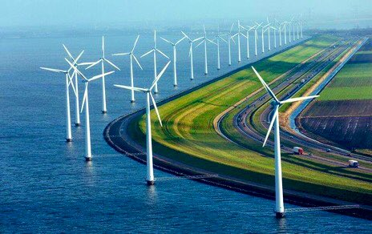

‘Cuando Dios creó el mundo, se olvidó de Holanda. Holanda tuvieron que hacerla los holandeses’.
2 siglos después de esta frase de Voltaire, los holandeses crearon una entera provincia, a 5 metros por debajo del nivel del mar: Flevoland, la isla artificial más grande del mundo.
